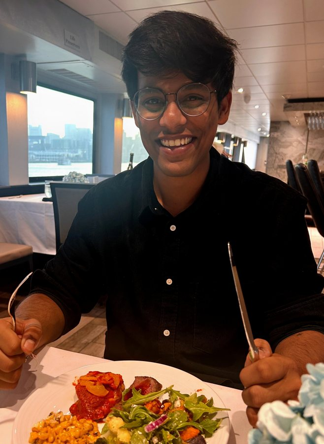

I currently work as an AI Engineer at Cambrian Lab in San Francisco, where I architect hybrid-retrieval systems, calibrate vector search pipelines, and build LLM orchestration workflows for enterprise supply-chain and data operations. Previously, I delivered a secure enterprise RAG platform at 22nd Century Technology, built spatial data pipelines and ML site-ranking engines at Surge Infotech, and led product and data analytics for UKG's enterprise SaaS platform. Across these roles, I've consistently worked at the intersection of data, analytics, and engineering—turning complex, high-volume enterprise data into systems that enable faster and more confident decisions. Today, that experience shapes my focus on building agentic AI and retrieval systems that are not only powerful, but calibrated, auditable, and trusted in real-world environments. And after all that engineering, I still believe there's one problem best left distinctly human: figuring out what everyone wants to eat.

text-embedding-3-small (1536-d) into a unified cosine Qdrant collection, with keyword payload indexes scoping HNSW top-K before an LLM ranking pass. A 3-band score+margin policy gates auto-confirmation. The where-used engine uses parent-traversal graph algorithms with cycle-detection guards, automating BOM impact analysis in SAP.BGE-Large-EN-v1.5 embeddings with section-aware chunking. A LlamaIndex pipeline narrows 30 candidates to 8 through 5-field metadata filtering, vector search and cross-encoder reranking, feeding LangChain orchestration. Validated on a held-out benchmark of 20 proposal queries.When a service you depend on quietly changes its API — what engineers call contract drift — the obvious fix often passes every test and still corrupts your data. PatchProof proposes the repair, then refuses to apply it until a verification gate proves the fix preserves what the integration used to do. Tested against 71 real breaking changes mined from three years of Stripe's published API history.
7/27 → 14/27 solvable cases — but costs some safety margin doing it. The harness reports both numbers rather than only the flattering one, because anyone deciding whether to trust this needs the cost, not just the gain.Five specialist agents — Triage, Logs, Metrics, Code and Knowledge — investigate a production incident in parallel, gather real evidence, and argue toward a root cause. A fixed formula, never the model's own opinion of itself, decides whether the answer is trustworthy or needs a human. Built on LangGraph, and it ships with the benchmark that asks whether all five agents were ever necessary. They mostly weren't, and I published that.
0% root-cause accuracy with zero evidence. Single-agent and multi-agent both hit 100%. Multi-agent's only real edge was evidence recall — 78% vs 72% — from cross-source merging. If I'd shipped only the headline you'd believe five agents were necessary. They weren't, and the harness that proves it is in the repo.Turns a raw product spec into user stories, features and engineering tasks — the week of grunt work between "we've decided to build this" and "the team can start." Seven cooperating agents, where the routing and planning decisions are genuinely made by the model rather than hardcoded, with a keyword fallback only if the call fails. Retry-with-backoff keeps a free-tier deployment reliable under real rate limits, not just in a demo.
Security tools work by matching today's attack against patterns they've seen before. For a genuinely novel incident there's no pattern to match — and that's exactly when the analyst is on their own. A five-component design that generates response playbooks from incident history, live threat feeds and MITRE ATT&CK mappings instead of waiting for a signature to match.
Ask my assistant anything about my background using the chat in the corner — or reach out directly.